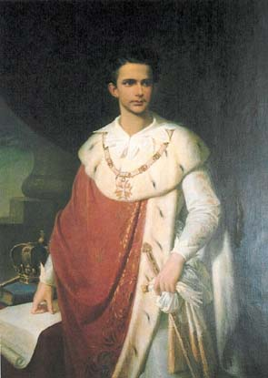

nom : Louis II
âge : Variable d'année en année
sexe : Extrêmement actif
arrivée au pouvoir : Élections libres (98% des voix, qui a parlé de trafic ?)
qualité : Absolument loyal envers ses allies .
défaut : Bête et superficiel (Et super comédien aussi avec un QI qui ferait pâlir les plus grands scientifiques et des stratégies hallucinantes)
Personnage
Âge:28 ans
Sexe:Homme
Description physique:
En chiffres :
1m82
75Kg
32cm
La dernière précision concerne en particulier les femmes(Mistivaliens s'abstenir)
En lettres :
Mince, brun, yeux couleur noisette, chevelure raide de couleur noir intense. Musclé a certains endroits et très rapide surtout en cas de confrontation avec un Bave-bull. En gros c'est un personnage élégant, fin et raffiné mais dans la limite du raisonnable
Plus ? :
Habile de ses mains : Peut enlever un soutif sans que la proprio ne s'en rendre compte. Traits fins : Cela vient de son sang noble. Peau : Toute blanche, a croire qu'il est tombé dans la crème fraîche quand il était petit. A tous les Mistivaliens : Oubliez ce que vous venez de lire et mettez vous bien dans la tête qu'il s'agit d'un dirigeant 100% Hetero (oui, ça existe)
Description du caractère
Aime:
-Les filles Dans les environs d'1M76 avec une bonne poitrine et bien souple...
-Tout se qui fait planer Vodka, Whisky, Absinthe, coco, Marie Jeanne...
-Les châteaux Avec plusieurs gouvernantes sexy, un héliport, une piscine couverte et une autre plein air, des salles et terrains de jeux et le plus important :Salle des fêtes.
-Les soirées jaunes C'est comme les soirées blanches sur Mistival mais en plus classe.
-Les leems C'est synonyme de pouvoir.
-Les bons rapports de cycles De quoi bâtir encore et encore...
-Les armées bien organisées Ça force le respect des confrères.
-Les animaux La SPA est une organisation très active et très influente chez les bavarois
Civilisation
Nom:Les Bavarois
Histoire: Parti de rien, arrivé sur Eternité avec une seule planète, Louis est maintenant l'un des commandants les plus importants et les pus actifs de la galaxie. Possédant un empire de 201 planètes et à la tête de la coalition la plus importante de la galaxie, Orinis, Louis peut se vanter d'être un des cinq commandants les plus influents de la galaxie. Plutôt diplomate et peu enclin à la guerre, il s'avère sanguinaire lorsqu'on touche à ses intérêts. Plusieurs fois par le passé, il a dû entrer en guerre , démontrant ainsi son intelligence et ses capacités militaires. Ce fût notamment le cas lorsqu'Orinis entra en guerre contre les natifs du secteur 8. Aujourd'hui, ses élans guerriers se sont plus ou moins calmés, mais avec lui, on ne sait jamais....
---- ---- ---- ---- ---- ---- ---- ---- ---- ---- ---- ---- ---- ---- ----
-Organisations connues sur la Baviere :
---- ---- ---- ---- ---- ---- ---- ---- ---- ---- ---- ---- ---- ---- ----
Plusieurs organisations légales ou criminelles osnt actives et très influentes dans l'empire Bavarois. Se sont soit des des sortes d'entreprises soit des organisations "familiales" En voici quelques unes des plus connues:
-Blanches fesses et les 7 mains: Organisation regroupant les plus grands Macs ainsi que les plus grands propriétaires de sex-shops. -Black Widow: Une sorte de club qui regroupe les vétérans d'une armée impériale qui porte le même nom. Cette armée n'est envoyée qu'en derniers recours car une fois sur le champ de bataille ils détruisent tout sans même différencier les troupes amies des troupes ennemies. Dans le civil il ne faut pas les provoquer sinon ils deviennent très féroces. -Rose Croix: Organisation de riches aristocrates qui excellent tant au niveau politique que financier. Ils contrôlent de loin toute organisation mafieuse et multinationales hyper lucratives. D'après certaines rumeurs, plusieurs membres du gouvernement dont Louis II lui même feraient partie de cette organisation. -Notre Cause (ou Cosa Nostra): Une organisation mafieuse très connue qui agit a certains endroits de la Bavière. Ils furent exilés sur une planète du secteur 8 qui porta leur nom. Bizarrement, c'est la seule qui était préparée a la guerre d'où une contre attaque fort efficace lors de la guerre contre les natifs de ce même secteur.